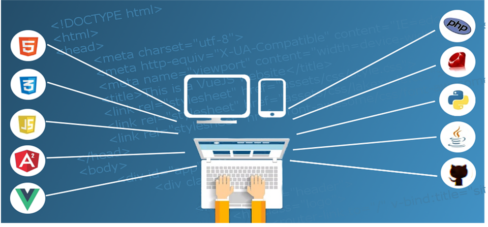

Programming languages are documentation that is implemented on a machine (computer) for the statement of algorithms and data structures. The term Programming Language is made up of two different words namely Programming and Language. These two words are defined as follows :-
Programming :-
When a specific program is to be determined, it is essential to design statements or instructions for the computer to carry out. The art of writing instructions for a computer to determine a particular task is called programming.Language :-
A language is defined as the set of all possible strings, words or sentences that can be derived from a given alphabet (a set of input symbols denoted by Σ. Mathematically, a language L is defined as :-Programming Language :-
A programming language is a computer language that can be used by programmers (developers) to connect with computers. It is a set of instructions written in any particular language (C, C++, Java, and Python) to implement a definite task. A programming language can create desktop applications, websites, and mobile applications.For Online Language Study
click here
